AI 每日新聞彙整
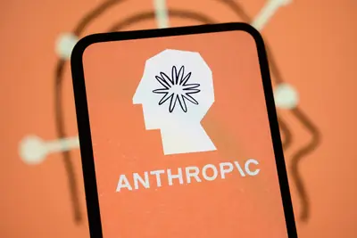
企業與資金 晶片與基礎設施
晶片與基礎設施
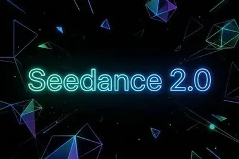
政策與法規全部主題
模型與研究
Qwen 3.8 27B模型評測得分52，與GPT-5.6 Luna持平
Qwen 3.8 27B在Artificial Analysis Intelligence Index獲得52分，與GPT-5.6 Luna（max）相同，僅比GLM-5.2（max）和DeepSeek V4 Pro 0813（max）低1分，而後兩者參數規模遠大於27B，顯示該模型效率驚人。
AI系統AxiomProver首次自動驗證「246定理」證明
Axiom Math團隊利用其AI系統AxiomProver，首次自動驗證了與質數相關的「246定理」證明，這是AI輔助數學研究的重要里程碑。該系統能檢查機器可讀版本的證明，顯示AI在形式驗證領域的潛力。
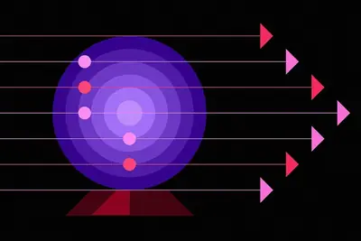
- IEEE Spectrum AI AI Used to Verify Toughest Mathematics Proof Yet
OpenAI GPT-5.6 Sol被譽為最佳視覺模型
根據Roboflow部落格文章，OpenAI的GPT-5.6 Sol被認為是迄今為止最優秀的視覺模型，引發Hacker News社群熱烈討論，獲得293點與151則評論。該模型在視覺任務上的表現備受矚目。
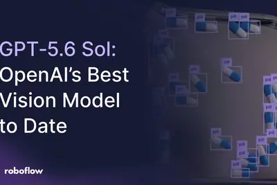
- Hacker News (100+) GPT 5.6 Sol is the best "vision" model OpenAI ever released
人形機器人晶片競爭轉向協同效率，算力非關鍵
人形機器人從展示走向量產，晶片競爭重點從AI算力與TOPS轉向感知、運算、決策與控制單元的協同效率，需在功耗、成本與反應速度間取得平衡。
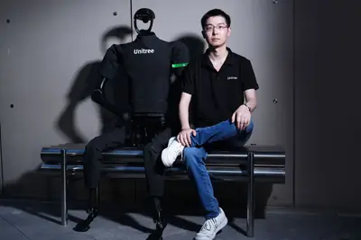
- DIGITIMES 中國機器人「算力」非關鍵 芯原指戰場轉向「協同效率」
AI 從輔助編程邁向代理群體，軟體開發流程持續演進
AI 對軟體開發的影響持續深化，從生成程式碼擴展到除錯、測試等整個生命週期，並朝向多代理協作的「代理群體」方向發展，有望進一步提升生產力。
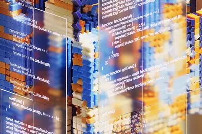
- IEEE Spectrum AI From AI Copilots to Agent Swarms
Hugging Face研究：相同叢集、順序改變利用率提升33點
Hugging Face發布一項研究，顯示在相同叢集條件下，僅改變任務順序即可將利用率提升33個百分點，凸顯調度最佳化的重要性。
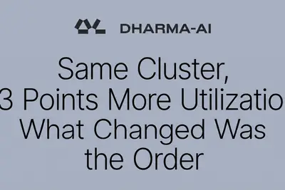
產品與應用
AI自動化新創Relay關閉，團隊加入Google Chrome部門
AI自動化新創Relay宣布關閉，創辦人Jacob Bank與團隊將加入Google Chrome團隊，未來將在瀏覽器中整合AI功能以協助用戶完成任務。另一方面，Google Workspace預設讓Gemini存取企業資料，管理員需手動關閉以保護隱私。
聯想設定Copilot+ PC門檻：16GB記憶體起跳
聯想即將推出的IdeaPad Vibe規格表顯示，記憶體低於16GB的機型將被歸類為「Non-Copilot」，即使搭載相同AMD Ryzen AI晶片也不標示為Copilot+ PC。此舉與微軟推廣16GB作為Copilot+標準的立場一致，但記憶體價格上漲可能促使廠商轉向8GB配置。
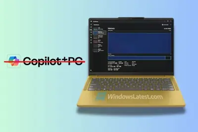
企業網路設備迎換機超級循環，AI與資安推升交換器需求
思科最新業績優於預期，執行長Chuck Robbins指出，AI、資安威脅與量子運算準備正推動企業進入網路設備全面更新週期，交換器與光通訊需求隨之升溫。
- DIGITIMES 企業網路設備迎換機超級循環 AI、資安推升交換器與光通訊需求
新一代奔馳 C 級全球首發，搭載 Momenta 智駕與豆包 AI
奔馳新一代 C 級車全球首發，採用 S 級同款發光格柵，基於 MB.OS 架構，整合豆包 AI 大模型，並搭載與 Momenta 共同研發的智駕系統，針對中國交通環境優化。
AI寵物科技與兒童機器人引發情感依賴與倫理討論
AI寵物用品如Whisker的智慧貓砂盆能監測寵物健康，但誤判案例引發可靠性質疑。同時，兒童機器人Moxie因公司倒閉而停止服務，讓孩子面臨失去「朋友」的情感衝擊，凸顯AI產品在情感連結與生命週期上的倫理議題。
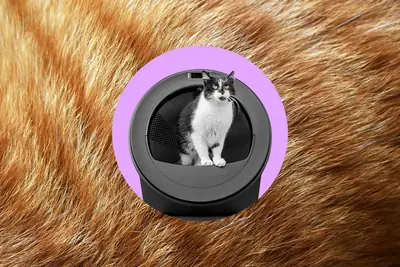
- The Verge AI Whisker’s AI-powered litter robot thinks my cats swapped bodies
- MIT Technology Review AI What happens when a kid’s robot best friend dies?
前SpaceX工程師打造機器人工廠，生產鋼鐵零件
一群前SpaceX工程師正在建造一座機器人工廠，用於生產鋼鐵零件，但強調並非追求全自動化的教條式做法。
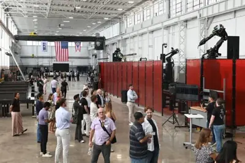
OpenAI 設計負責人建議設計師「少做一點」以因應 AI 時代
調查顯示科技業設計師壓力最大，OpenAI 設計負責人認為這是最好時機，指出工程師因 AI 提升效率而設計師未受惠的落差，建議設計師不要與工程師硬比產能，而是「少做一點」專注本質。
Google 推廣減少手機使用、增加 AI 依賴，但消費者是否買單？
Google 利用人們對科技的依賴來推銷新手機，宣稱可減少手機使用時間並增加 AI 輔助，但評論質疑此舉的實際效果與動機。
iQOO Neo11 至尊版發表，搭載 Monster 超核引擎與天璣 9500M
iQOO Neo11 至尊版手機官宣，搭載新一代 Monster 超核引擎，支援《開放世界手遊》60 幀極高畫質，配備 8K 冰穹 3D VC 散熱，並通過 KPL 比賽用機認證。手機將於 8 月 18 日發布。
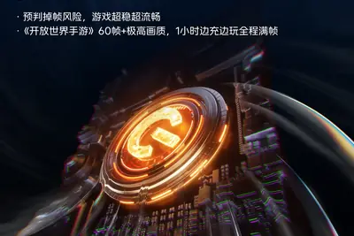
小米REDMI K100/K90 Pro Max新增顶部NFC刷卡區
小米REDMI K100 Pro Max與K90 Pro Max將在機身頂部加入NFC刷卡區，支援背部與頂部雙觸發刷卡。產品經理確認兩款手機殼不通用，新機已於8月11日發布，搭載第五代驍龍8至尊版處理器與AI獨顯晶片D2。
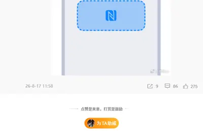
專家建議：別再花錢買手機儲存空間，改用雲端或管理技巧
ZDNet文章指出，用戶常過度購買手機儲存空間，建議以實際需求（如照片、影片數量）而非GB數來評估，並善用雲端備份與清理工具，避免浪費金錢。
舊Android手機可改裝為樹莓派替代品，節省成本
由於AI需求推升記憶體價格，樹莓派價格高漲，專家建議可將舊Android手機改裝為伺服器或開發用主機，作為低成本替代方案。文章提供實際操作步驟，適合實驗與開發用途。
企業與資金
Anthropic年化營收飆升至650億美元，兩個月增180億
Anthropic的年化營收（Annual Revenue Run Rate）截至7月底已超過650億美元，較5月的470億美元增加180億美元，成長速度驚人，也為其可能於今年晚些時候IPO增添看點。
- TechCrunch AI Anthropic’s annualized revenue surges to $65B
Anthropic年化營收7月底突破650億美元，成長迅猛
據彭博社報導，Anthropic截至7月底的年化收入運行率已超過650億美元（約合新台幣4,386億元），相較5月的470億美元與2025年底的90億美元，成長極為快速，並已向投資者披露此數據。
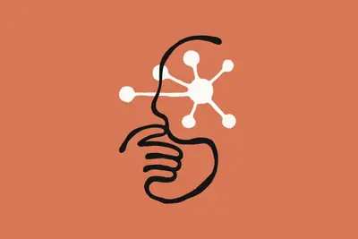
三星、SK海力士現金逼近278兆韓元，擴產與股東回饋成抉擇
AI記憶體榮景為南韓半導體帶來巨額現金，三星電子與SK海力士截至2026年第2季持有的現金性資產及短期金融商品合計逼近278兆韓元（約1,946億美元），如何在擴產、購併與股東回饋之間抉擇成為焦點。
- DIGITIMES 三星、SK海力士「現金海嘯」 擴產、購併與股東回饋成抉擇
華碩、美超微訂單創高，NVIDIA財報有望再超標
市場對AI需求泡沫的疑慮未消，但從NVIDIA布局、台積電董事長魏哲家對CSP需求的掌握，到美國CSP擴大資本支出，以及華碩、技嘉與美超微的最新財報與訂單動向，均顯示AI需求持續強勁。

- DIGITIMES 華碩伺服器展望上修、美超微訂單創高 NVIDIA財報再拚超標
企業採用 AI 代理數量今年成長三倍，投資報酬率逐漸浮現
根據 Salesforce 的 Agentic Enterprise Index，企業採用 AI 代理的數量今年成長三倍，各行各業開始找到最適合自身需求的策略，並出現可量測的投資報酬率。
Groq募資3.5億美元轉型neocloud，Nvidia投資SB Energy
AI晶片新創Groq完成3.5億美元融資，估值達35億美元，將從晶片製造轉型為neocloud服務，並擴大採用Nvidia GPU的資料中心。同時，Nvidia宣布投資SB Energy 15億美元，確保其晶片用於OpenAI資料中心。
語音AI新創Wispr獲2.8億美元融資，估值達20億美元
Wispr完成2.8億美元融資，估值達20億美元，資金將用於拓展會議記錄等新領域。該公司以語音聽寫技術起家，近期推出筆記工具，顯示其業務範圍正從單純聽寫擴展至更廣泛的AI應用。
Musk高調獨採NVIDIA GPU，超微仍入股SpaceX
Elon Musk在財報會議宣稱SpaceX未來AI基礎設施將專門採用NVIDIA晶片，超微執行長蘇姿丰表達尊重並期待持續合作，但超微同時也入股SpaceX，顯示雙方關係複雜。
- DIGITIMES Elon Musk高調獨採NVIDIA GPU 為何超微還入股SpaceX？
晶片與基礎設施
Nvidia為OpenAI俄亥俄資料中心提供最高1050億美元擔保
Nvidia同意為OpenAI在俄亥俄州租賃的資料中心提供最高1,050億美元擔保，該設施由軟銀旗下SB Energy開發，Nvidia另投資15億美元。黃仁勳也透露OpenAI承諾在2030年前部署約12GW Nvidia算力，若擴大合作可達16GW，對應業務機會約6,000億美元，但引發「循環融資」疑慮。
NVIDIA台灣新總部電力需求上看240MW，台電三階段供電
NVIDIA台灣新總部落腳北士科，預計2026年底動工，園區產業用電需求上看240MW。台電規劃短、中、長三階段興建變電所，以滿足NVIDIA等高科技產業的電力需求。
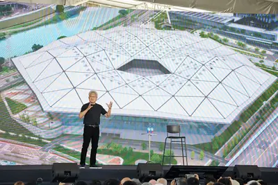
- DIGITIMES 北士科電力總需求上看240MW 台電「三階段」替NVIDIA解憂
台電AI用電壓力大，電力建設遇行政與民眾溝通關卡
AI與半導體產業推升用電需求，台電肩負穩定供電任務，但在電源開發、變電所興建與電網強韌計畫的施工現場，仍面臨行政程序與民眾溝通兩大挑戰。
- DIGITIMES AI吃電怪獸來襲 台電一線電力建設遇行政、民眾溝通兩大關卡
政策與法規
字節跳動與美國電影協會簽署協議，強化 AI 版權保護
字節跳動與美國電影協會（MPA）簽署協議，針對 Seedance 影片生成與 Seedream 圖像生成模型加強版權保護，新版模型已加入更強的知識產權保護機制。
Anthropic執行長Dario Amodei談AI信任危機與監管必要性
Anthropic執行長Dario Amodei在社群媒體回應外界批評，強調AI產業與大眾之間存在信任危機，並主張監管制度若設計得當，反而能分散權力、制衡企業影響力，而非必然導致權力集中。他呼籲與其誇大AI能力，不如實際解決問題。
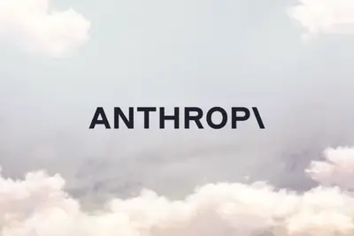
- TechOrange 科技報橘 Anthropic 執行長談 AI 信任危機：與其宣稱「AI 能治癌」，不如真的把癌症治好
- 科技新報 TechNews Anthropic 執行長剖析 AI 反彈，關鍵在美國大眾失去信任
南韓布局SMR、量子等7大領域，目標2035量子晶片稱霸全球
南韓政府推動國家級專案，將小型模組化反應爐（SMR）、量子等7大尖端技術列為核心戰略資產，提前布局半導體之外的未來成長動能，並設定2030年登月、2035年量子晶片稱霸全球的目標。
- DIGITIMES 南韓布局AI半導體外新支柱 拚2030登月、2035量子晶片稱霸全球
Flock 更新平台功能，但批評者認為未解決根本問題
美國警用科技公司 Flock 宣布更新其平台，該公司擁有約 12 萬個自動車牌讀取器。更新旨在改善隱私與公民自由，但批評者認為這些措施不足以應對監控擴張的疑慮。
- MIT Technology Review AI What Flock’s defenders are missing
安全與倫理
調查揭露Amazon疑似銷毀稀有書籍以訓練AI模型
404 Media的調查報導指出，Amazon疑似透過中間人大量收購稀有書籍，並將書本送往AI訓練設施進行掃描，以充實大型語言模型的訓練資料。這些書籍因未在網路上公開而具有獨特價值，但此舉引發學術與出版界對文化資產保存的擔憂。
佛州男子向 ChatGPT 描述殺人計畫，OpenAI 通報 FBI
OpenAI 向 FBI 舉報一名 25 歲佛州男子，因其向 ChatGPT 詳細描述殺害前女友的計畫。OpenAI 政策允許在偵測到潛在傷害時審查互動並向執法部門通報。
調查揭露亞馬遜為訓練 AI 切書脊掃描，銷毀珍貴紙本書
外媒 404 Media 追蹤發現，亞馬遜購買大量紙本書籍，在拉斯維加斯倉庫由 VGT3 團隊切掉書脊以提高掃描效率，原書因此被毀，掃描數據用於訓練 Nova 模型。書商擔憂系統性掃描。
AI 生成的 GitHub Copilot 自動修復功能導致 Snowflake Jira 遭入侵
研究顯示，攻擊者利用 GitHub Copilot 的 AI 生成自動修復功能，成功入侵 Snowflake 的 Jira 系統，凸顯 AI 輔助開發工具可能帶來的安全風險。
- Hacker News (100+) AI-Generated GitHub Copilot “Autofix” Allowed Compromise of Snowflake's Jira
開源社群
Hugging Face報告：阿里巴巴Qwen下載量與衍生模型數居開源模型之冠
Hugging Face發布夏季開放模型生態報告，指出阿里巴巴Qwen系列模型在2026年前7個月下載量超過20億次，衍生模型數達151,448個，為Meta的2.6倍、Google的1.8倍，顯示中國開源模型在開發者生態中佔據主導地位。報告也顯示開放模型競爭已從模型能力延伸到生態、部署與商業模式。
Linux 7.2 引入 AI 增強的快取感知排程，支援更多硬體
Linux 7.2 核心發布，新增 AI 增強的 cache-aware 排程，並帶來檔案系統與 I/O 改進，以及對 AMD、Intel、Apple、Nvidia、USB4 和筆電硬體的廣泛支援。
其他
每日科技新聞摘要：三星HBM危機、Nvidia投資隱憂、芯原策略
DIGITIMES每日摘要報導三星全永鉉再度示警HBM危機，Nvidia 5千億美元投資計畫存在三大隱憂，以及芯原認為戰場轉向「協同效率」。